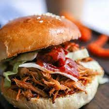

Pulled Pork Sandwich Recipe

Description
This pulled pork sandwich will leave you with a full belly and a succulent tongue tingle.
Ingredients
~Dry Rub~
- 2 tablespoons brown sugar
- 2 tablespoons garlic powder
- 2 tablespoons ground black pepper
- 2 tablespoons red pepper flakes
- 2 tablespoons salt
- 2 tablespoons paprika
- 1 (3 1/2) pound pork butt roast with bone
~Cooking Liquid~
- 4 cups beef stock
- 1/2 cup hot sauce
- 3 tablespoons honey
- 1 tablespoon molasses
- 1 tablespoon maple syrup
- 4 cloves garlic, crushed
~Coleslaw~
- 1 cup mayonnaise
- 2 tablespoons Dijon mustard
- 1 teaspoon hot sauce
- 1 teaspoon salt
- 1 teaspoon ground black pepper
- 2 tablespoons white vinegard
- 1 (16 ounce) bag of coleslaw mix
~BBQ Sauce~
- 1 tablespoon vegetable oil
- 5 cloves garlic, minced
- 2 cups ketchup
- 1/2 cup honey
- 2 tablespoons hot pepper sauce
- 2 tablespoons molasses
- 5 tablespoons cider vinegar
- salt and ground black pepper to taste
- 8 Kaiser rolls, split
Steps
-
- Rub it, bub
- Combine brown sugar, garlic powder, 2 tablespoons black pepper, red pepper flakes, 2 tablespoons salt, and paprika in a bowl. Rub the spice mixture over pork butt, cover, and refrigerate 5 hours or overnight.
-
- You can do it, no presusure
- Pour beef stock and 1/2 cup hot sauce in a pressure cooker. Stir in 3 tablespoons honey, 1 tablespoon molasses, maple syrup, and 4 crushed garlic cloves. Place the pork butt in the pressure cooker, seal the lid, and bring up to low pressure over high heat. Reduce the heat to low, maintaining low pressure, and cook for 2 hours.
-
- Mayo:Love it or Hate it
- While the pork is cooking, make the coleslaw. Mix mayonnaise, Dijon mustard, 1 teaspoon hot sauce, white vinegar, 1 teaspoon salt, and 1 teaspoon black pepper in a bowl. Add the coleslaw mix and toss to coat. Cover and refrigerate.
-
- Ease up
- Turn off the heat and let the pressure reduce naturally; remove the lid and let the pork rest for 5 minutes. The meat should shred easily with a fork; if it doesn't fall off the bone, reseal the lid, turn on the heat, return the pressure cooker to low pressure, and cook for another 30 minutes.
-
- Shred bro
- Remove meat from the pressure cooker, reserving 1/4 cup cooking liquid. Shred the meat using two forks and set aside.
-
- Tis the season
- Heat vegetable oil in a saucepan over medium heat. Stir in 5 cloves of garlic; cook and stir until the garlic is fragrant and just starting to turn brown, about 3 minutes. Remove from heat and stir in ketchup, 1/2 cup honey, 2 tablespoons hot sauce, 2 tablespoons molasses, cider vinegar, and reserved cooking liquid. Season with salt and black pepper to taste. Bring the sauce to a simmer over medium heat.
-
- Kaiser Soze
- Fill each Kaiser roll with two big forkfuls of pork, two tablespoons of barbeque sauce, and 2 spoonfuls of coleslaw.
- Eat it